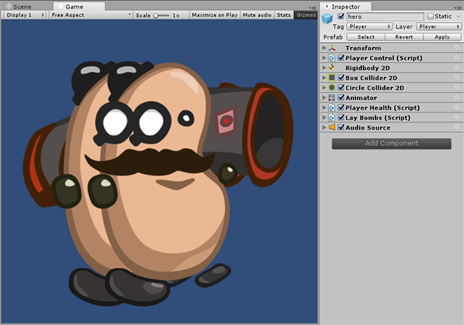
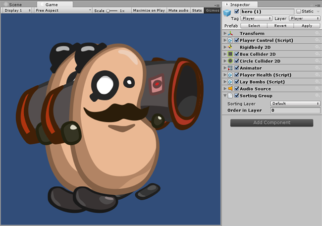

SortingGroup
class in UnityEngine.Rendering
/
Inherits from:Behaviour
/
Implemented in:UnityEngine.CoreModule
Description 描述
Adding a SortingGroup component to a GameObject will ensure that all Renderers within the GameObject's descendants will be sorted and rendered together.
A common use case for having a SortingGroup is to create complex 2D characters that are made up of multiple SpriteRenderers. When several clones of such a character overlap, their individual body parts might not be sorted properly resulting in a visual glitch where the the body parts interleave. For example, the hands of two characters might be sorted in front of their bodies, where you would expect one entire character to be drawn in front of the other character. The SortingGroup component solves this by ensuring the entire branch of the character are sorted and rendered together.
The descendants of the SortingGroup are sorted using the same SortingLayer and Renderer.sortingOrder. However, they are only sorted against other descendants of the SortingGroup and not with any renderers outside of it. This allows you to reuse the same SortingLayers (for example, "Hands", "Torso"...) to sort body parts while ensuring they never interleave with other clones of the character.
The SortingGroups, together with other renderers, are sorted using the SortingLayer and Renderer.sortingOrder. Additionally, they can be nested within other SortingGroups. This is useful if you have branches of descendants that should not be mixed up i.e. the "Left Hand" vs the "Right Hand" hierarchy branches.

.
Properties 属性
| sortingLayerID | Unique ID of the Renderer's sorting layer. | ||
| sortingLayerName | Name of the Renderer's sorting layer. | ||
| sortingOrder | Renderer's order within a sorting layer. |
Inherited Members 继承成员
Properties 属性
| enabled | Enabled Behaviours are Updated, disabled Behaviours are not. | ||
| isActiveAndEnabled | Has the Behaviour had active and enabled called? | ||
| gameObject | The game object this component is attached to. A component is always attached to a game object. | ||
| tag | The tag of this game object. | ||
| transform | The Transform attached to this GameObject. | ||
| hideFlags | Should the object be hidden, saved with the Scene or modifiable by the user? | ||
| name | The name of the object. |
Public Methods 公共方法
| BroadcastMessage | Calls the method named methodName on every MonoBehaviour in this game object or any of its children. | ||
| CompareTag | Is this game object tagged with tag ? | ||
| GetComponent | Returns the component of Type type if the game object has one attached, null if it doesn't. | ||
| GetComponentInChildren | Returns the component of Type type in the GameObject or any of its children using depth first search. | ||
| GetComponentInParent | Returns the component of Type type in the GameObject or any of its parents. | ||
| GetComponents | Returns all components of Type type in the GameObject. | ||
| GetComponentsInChildren | Returns all components of Type type in the GameObject or any of its children. | ||
| GetComponentsInParent | Returns all components of Type type in the GameObject or any of its parents. | ||
| SendMessage | Calls the method named methodName on every MonoBehaviour in this game object. | ||
| SendMessageUpwards | Calls the method named methodName on every MonoBehaviour in this game object and on every ancestor of the behaviour. | ||
| TryGetComponent | Gets the component of the specified type, if it exists. | ||
| GetInstanceID | Returns the instance id of the object. | ||
| ToString | Returns the name of the object. |
Static Methods 静态方法
| Destroy | Removes a GameObject, component or asset. | ||
| DestroyImmediate | Destroys the object obj immediately. You are strongly recommended to use Destroy instead. | ||
| DontDestroyOnLoad | Do not destroy the target Object when loading a new Scene. | ||
| FindObjectOfType | Returns the first active loaded object of Type type. | ||
| FindObjectsOfType | Returns a list of all active loaded objects of Type type. | ||
| Instantiate | Clones the object original and returns the clone. |
Operators 运算符
| bool | Does the object exist? | ||
| operator != | Compares if two objects refer to a different object. | ||
| operator == | Compares two object references to see if they refer to the same object. |